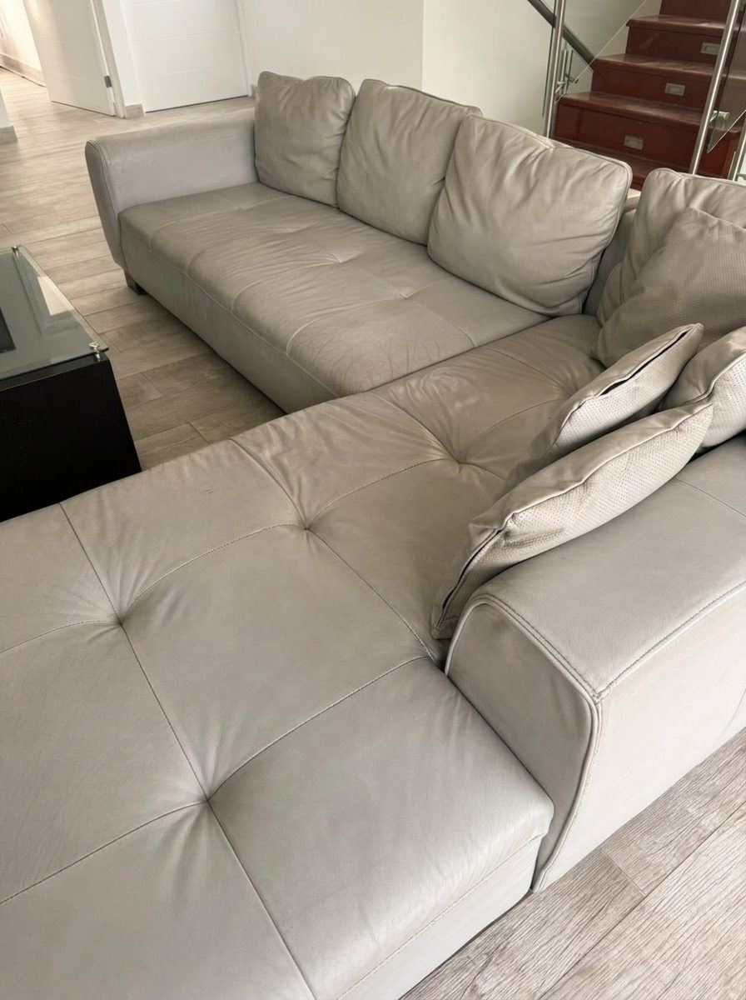
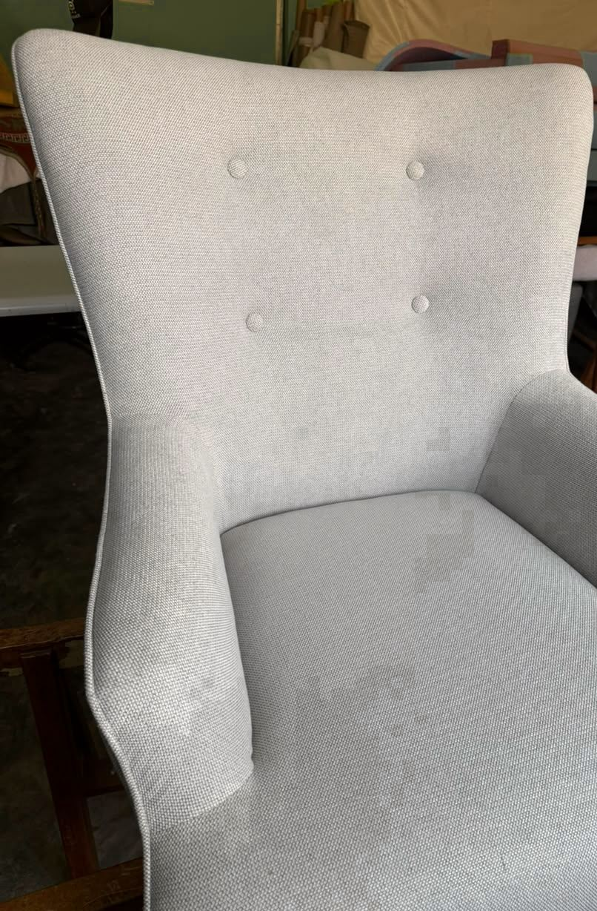
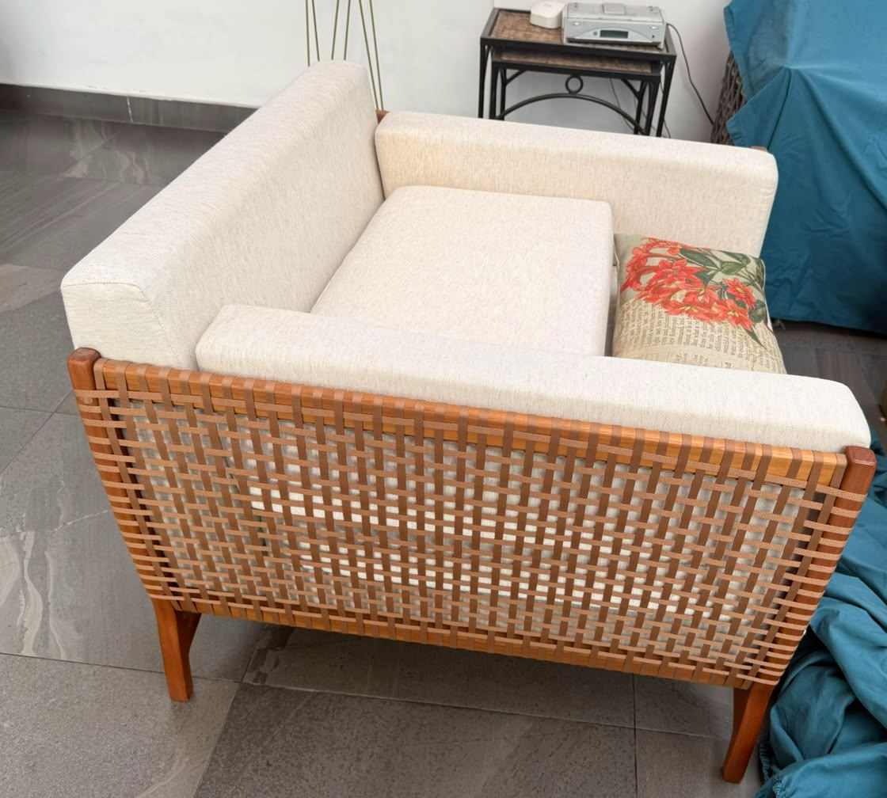

Salas y sofás
Tapicería a medida · Desde hace 29 años
Los de siempre, para seguir viviendo.
Restauramos y tapizamos sus muebles con el cuidado de un trabajo hecho a mano.
Un oficio que se aprende con las manos.
Miraflores · Surco · San Isidro
La textura. La forma. El detalle.
Un recorrido por las piezas y los detalles de nuestro taller.



Cada pieza tiene su propia forma de hacerse.
Una selección del taller
Sofás, butacas y piezas a medida.
De nuestro taller a su casa.
12 trabajos


Maestro Rivera · Lima
Hace 29 años que trabajamos con telas, madera y espuma. Escuchamos lo que necesita, revisamos su mueble y le ayudamos a elegir cómo renovarlo.
Desde la primera conversación hasta la entrega, el trato es directo con el maestro tapicero.
Conversemos sobre su muebleLo que también importa
Revisamos la estructura y el relleno antes de colocar la tela. Lo que no se ve también se siente al sentarse.
Evaluamos qué se puede conservar y qué necesita renovarse.
Tela, textura y firmeza según el uso que le dará.
Ajustamos el relleno y cuidamos cada costura.

Empecemos por una foto
Envíenos una foto por WhatsApp. Le orientamos sobre el tapizado y coordinamos los siguientes pasos.
Consultar por WhatsApp O llámenos al 997 317 630